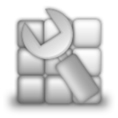
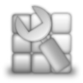

Computational Analysis
Fluent Meshing Characteristics
- Embedded into the Fluent User Interface
- Modern Interface, Model tree & Icons
- Read CAD and also surface mesh complex multi-region assemblies
- Geared towards advanced users with a lot of control
- Can handle billion cell + meshes
- Scriptable for batch execution
Mesh Flexibility
- Connect separated surface meshes together to make conformal then fill
- Connect external hexahedral meshes to triangular surface meshes and fill shell volume
- Scriptable TUI with extensive wildcard support
- Sweep quad/tri surfaces into hex/prism volumes
- Remeshing tools to redistribute and improve surface meshes
- Import 3 rd Party meshes and fix, improve quality, remesh, or insert “post” prism layers
 

Summary
- Fluent Meshing is a robust and powerful mesh generation software for unstructured meshing
- Fluent Meshing contains several tools: ad
- Deep toolbox of flexible commands – a “transparent meshing toolbox”
Powered by yyz